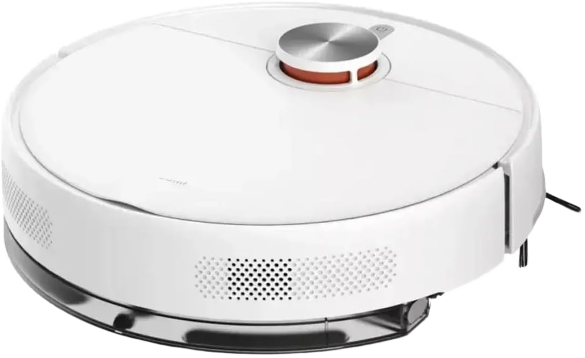
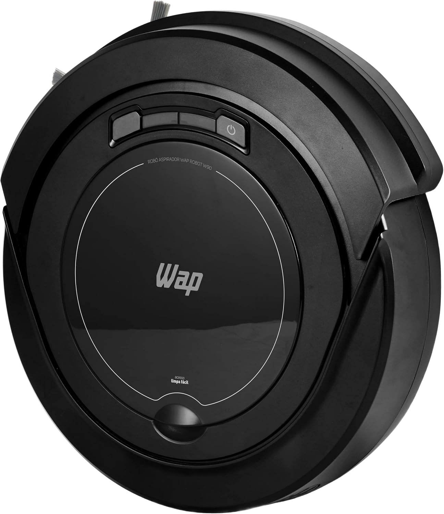
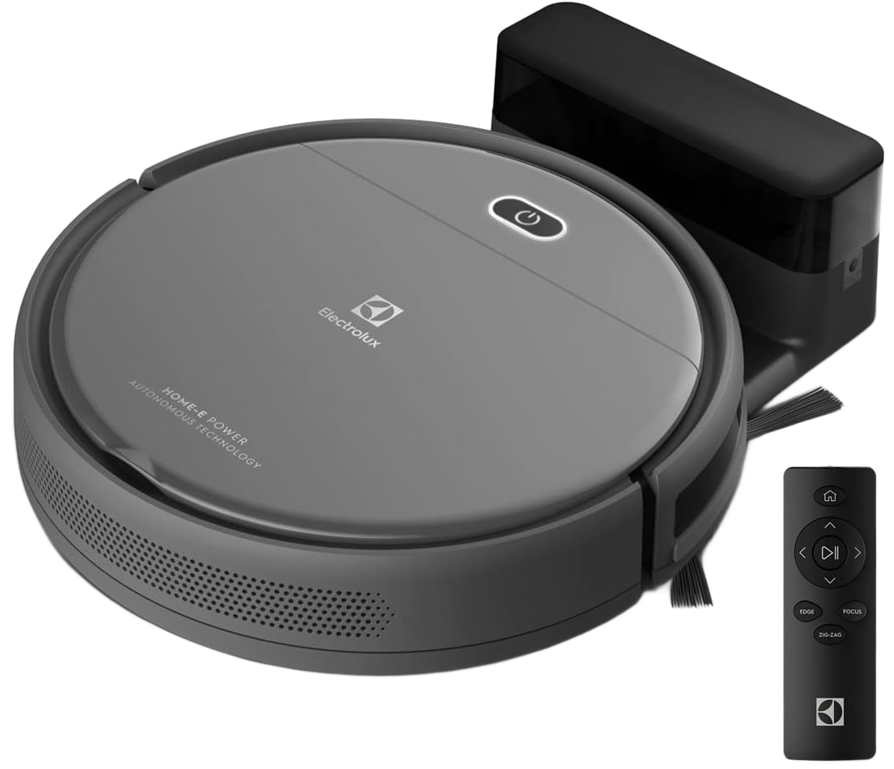

Comparamos os mais vendidos da Amazon Brasil, do básico de R$329 ao top de linha. O líder atual entrega sucção forte, mapa a laser e bateria pra casa grande, sem custar uma fortuna.

Potência de sobra pra poeira fina, migalhas e pelo de pet em piso duro e tapete baixo.
Ele mapeia a casa em 3D pelo app, limpa cômodo por cômodo e desvia de obstáculos, sem ficar batendo nas paredes.
A escova em V solta os fios e cabelos sozinha. Quem tem cachorro e gato sente a diferença.
Até 180 minutos de limpeza e retorno automático à base pra recarregar. Casa grande, sem você empurrar nada.
Robô barato que bate nas paredes e perde área não limpa direito. Robô caro com recursos que você não usa é dinheiro jogado fora. Estes são os pontos que decidem.
É a força de aspiração. De 2.500Pa a 4.000Pa dá conta do dia a dia; acima de 8.000Pa pega tapete e pelo de pet com folga.
Mapa a laser (LiDAR) limpa em linhas organizadas e não se perde. Navegação aleatória é mais barata, mas deixa falhas.
Autonomia define se ele limpa a casa toda numa carga. Retorno automático à base é o mínimo pra não te dar trabalho.
Quanto mais baixo, mais embaixo de móveis ele entra. Os mais potentes costumam ser um pouco mais altos, fique atento.
Leva direto para a página oficial do produto na Amazon.
| Modelo | Sucção | Navegação | Nota | Preço (jun/26) | Melhor para |
|---|---|---|---|---|---|
| Xiaomi S40Vencedor | 10.000Pa | Laser (LiDAR) | 4,8 | R$ 1.325 | Quem quer o melhor equilíbrio |
| WAP Robot W90 | Básica | Aleatória | 4,3 | R$ 329 | Primeiro robô, gastando pouco |
| Electrolux ERB10 | Média | Aleatória | 4,4 | R$ 899 | Marca tradicional, intermediário |
| Xiaomi S40 Pro | Mais forte | Laser (LiDAR) | 4,6 | R$ 2.289 | Quem quer o topo de linha |

É o robô de entrada mais vendido do Brasil, e cumpre o papel: mantém o pó e os pelos sob controle no dia a dia por menos de R$350. Não tem mapa a laser (anda de forma mais aleatória) nem a sucção dos modelos caros, mas pra quem nunca teve um robô e quer testar sem gastar muito, é a porta de entrada certa.
Ver preço atual na Amazon →
Pra quem prefere uma marca conhecida e assistência fácil no Brasil, a Electrolux é o meio-termo. Boa autonomia e a confiança de uma fabricante tradicional, num preço entre o robô de entrada e o Xiaomi. Não tem o mapa a laser do líder, mas é uma opção sólida e sem surpresas.
Ver preço atual na Amazon →Se o orçamento permite, a versão S40 Pro sobe o nível: sucção ainda mais forte e recursos extras de limpeza, pela faixa de R$ 2.289. É o passo a mais pra quem tem casa grande, vários pets ou quer o que há de mais completo da linha.
Ver o S40 Pro na Amazon →Vale, desde que você entenda o que ele faz. Um robô aspirador não substitui a faxina pesada, ele não arranca sujeira grudada nem encera o chão. O que ele faz, e faz muito bem, é manter o piso limpo todos os dias, aspirando pó, migalhas e pelo, pra você espaçar bastante as limpezas profundas.
Quem mais sente a diferença é quem tem animais e quem tem rotina corrida. Você programa o robô pra rodar enquanto trabalha ou dorme, acompanha pelo app, e chega numa casa com o chão sempre em ordem. Vários donos relatam que ele dá conta do pelo de cachorro e gato no dia a dia sem esforço nenhum.
A pergunta certa não é se vale a pena, e sim qual nível você precisa. Pra um primeiro robô e orçamento curto, o de entrada já entrega praticidade. Pra mapa preciso, sucção forte e casa grande, o Xiaomi S40 é o ponto de equilíbrio que recomendamos.
Em tapetes baixos e médios, sim, principalmente os modelos com sucção alta como o Xiaomi S40 (10.000Pa). Tapetes muito altos e felpudos são o limite de qualquer robô, ele pode subir mas não aspira tão fundo.
Faz muita diferença. Com LiDAR o robô limpa em linhas organizadas, não repete área e não se perde. Sem ele, a navegação é mais aleatória e pode deixar falhas. Se a casa é grande ou tem vários cômodos, o laser compensa.
Passa, mas com expectativa certa: o pano umedecido tira a poeira fina e dá uma refrescada no piso. Não espere ele esfregar sujeira grudada como você faria no braço. Para o dia a dia, ajuda bastante.
Sim, e é um dos melhores motivos pra ter um. Modelos com escova anti-emaranhamento, como o Xiaomi S40, lidam bem com pelo de cachorro e gato sem enrolar os fios na escova.
Melhor equilíbrio entre preço e recursos: Xiaomi S40. Primeiro robô gastando pouco: WAP W90. Marca tradicional intermediária: Electrolux. Topo de linha: Xiaomi S40 Pro. Os preços mudam toda semana, então confira o valor atualizado antes de fechar.
Ver o Xiaomi S40 na Amazon →